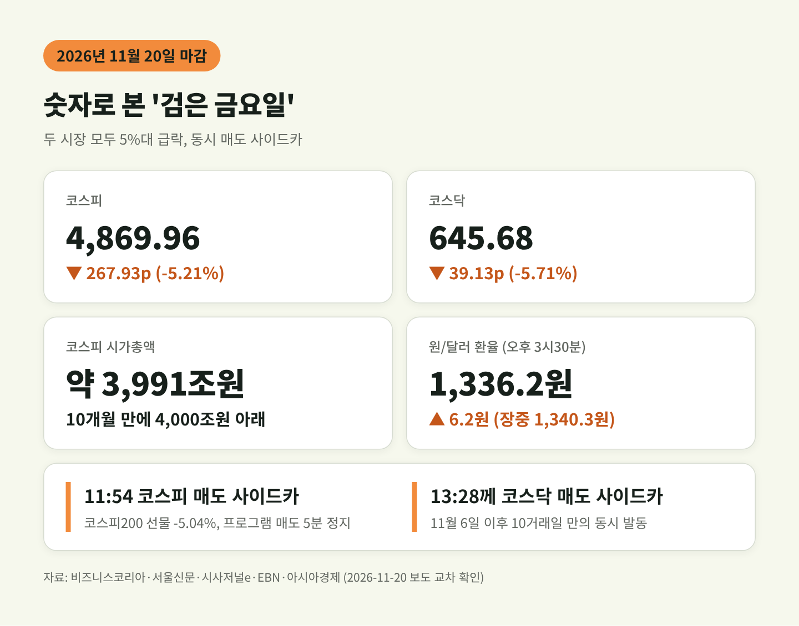
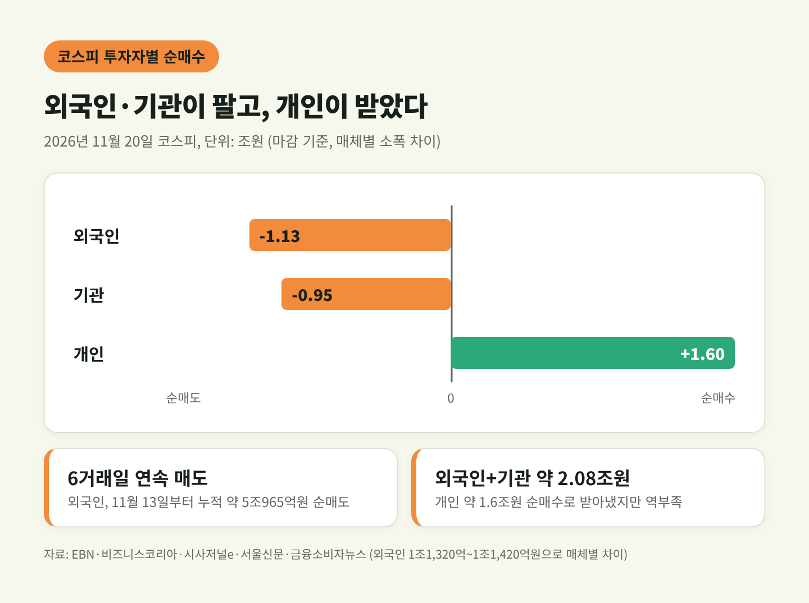
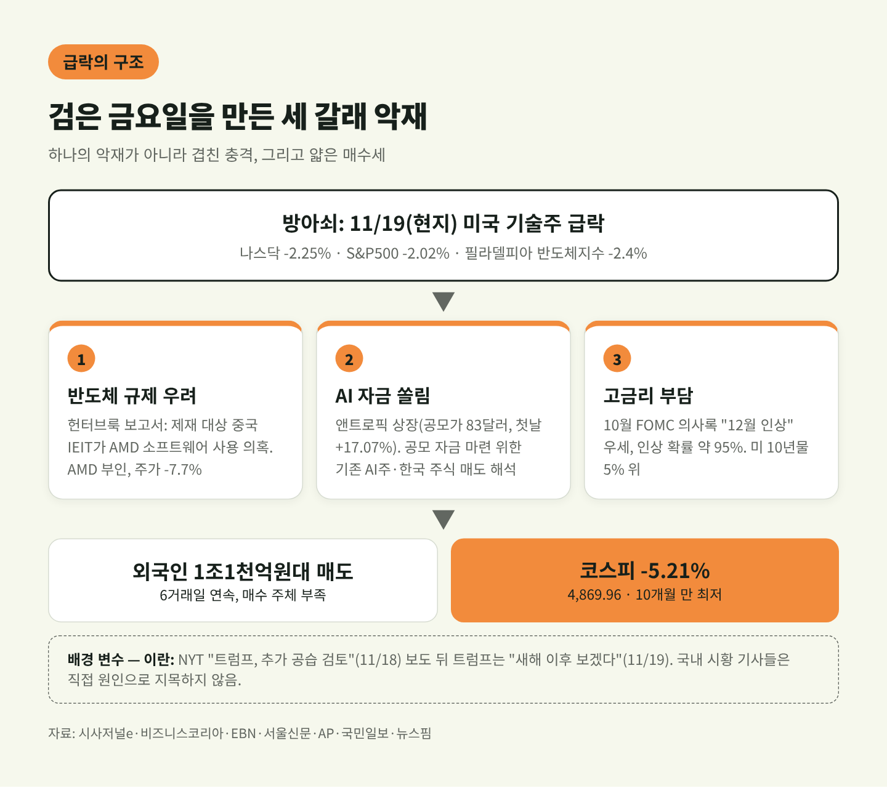
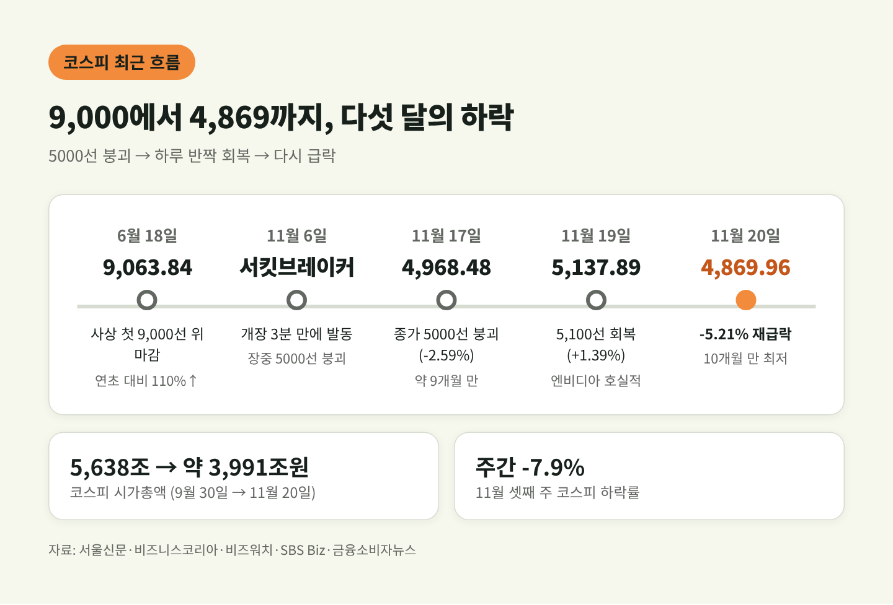
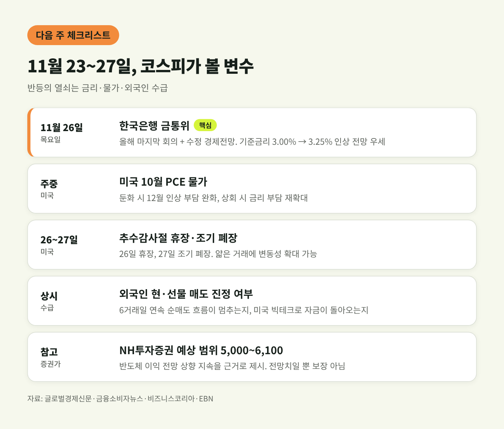

코스피 5% 폭락 검은 금요일, 4,869로 무너진 세 가지 이유

11월 20일 코스피가 하루 만에 5% 넘게 빠지며 4,869선으로 내려앉았습니다. 이번 글에서는 이날 무슨 일이 있었는지, 왜 이렇게 크게 흔들렸는지, 다음 주에는 무엇을 봐야 하는지를 차례로 정리해 보겠습니다.
3줄 요약
- 코스피는 5.21% 내린 4,869.96, 코스닥은 5.71% 내린 645.68에 마감했습니다. 두 시장 모두 매도 사이드카가 걸렸습니다.
- 미국 기술주 급락, AMD 공매도 보고서가 키운 반도체 규제 우려, 앤트로픽 상장을 둘러싼 AI 자금 이동이 한꺼번에 겹쳤습니다.
- 다음 주에는 26일 한국은행 금통위, 미국 10월 PCE 물가, 외국인 매도 진정 여부가 반등의 열쇠입니다.
■ 숫자로 본 11월 20일
코스피는 전날보다 267.93포인트(5.21%) 내린 4,869.96에 장을 마쳤습니다. 시작부터 4.08% 빠진 4,928.51이었고, 오후 2시 반 무렵에는 4,831.69까지 밀렸습니다.
종가 기준으로는 1월 16일(4,840.74) 이후 약 10개월 만의 최저치입니다. 코스피 시가총액도 약 3,991조원으로 줄어, 10개월 만에 4,000조원 아래로 내려갔습니다. 이번 주 한 주 동안에만 지수가 7.9% 빠졌습니다.
코스닥은 39.13포인트(5.71%) 떨어진 645.68에 마감했습니다. 코스피에서는 809개 종목이 내리고 88개만 올랐습니다. 사실상 시장 전체가 무너진 하루였습니다.
오전 11시54분에는 코스피200 선물이 5% 넘게 떨어지면서 코스피 매도 사이드카가 발동됐습니다. 프로그램 매도 주문을 5분간 멈추는 장치입니다. 코스닥도 오후 1시28분께 사이드카가 걸렸습니다. 두 시장에 같은 날 매도 사이드카가 걸린 것은 서킷브레이커까지 발동됐던 11월 6일 이후 10거래일 만입니다.

■ 누가 팔고 누가 샀나
매도는 외국인과 기관에서 나왔습니다. 코스피에서 외국인은 1조1천억원대, 기관은 약 9,500억원을 순매도했습니다. 둘을 합치면 2조원이 넘습니다.
이 물량을 받아낸 것은 개인이었습니다. 개인은 약 1조6천억원을 순매수했습니다.
외국인 매도는 하루로 끝난 일이 아닙니다. 13일부터 6거래일 연속 순매도했고, 누적 규모는 5조965억원에 이릅니다.
대형주가 직격탄을 맞았습니다. 삼성전자는 7.01% 내린 18만3,100원, SK하이닉스는 5.92% 내린 111만3,000원에 마감했습니다. 삼성전기는 12.54%, SK스퀘어는 8.39% 급락했습니다. 코스닥에서도 리노공업·원익IPS·이오테크닉스 같은 반도체 장비·부품주가 14~15%씩 빠졌습니다.
업종으로 보면 전기·가스(+0.42%)를 빼고 모두 내렸습니다. 기계(-7.86%)와 전기·전자(-6.57%)의 낙폭이 가장 컸습니다.
원/달러 환율은 6.2원 오른 1,336.2원(오후 3시30분 기준)에 주간 거래를 마쳤습니다. 장중에는 1,340.3원까지 올랐습니다. 연준의 추가 금리 인상 우려에 달러가 강해진 데다, 주식을 판 외국인의 환전 수요가 겹쳤다는 분석이 나옵니다.

■ 왜 이렇게 크게 빠졌나 — 세 갈래의 악재
급락의 방아쇠는 전날 밤 미국 증시였습니다. 19일(현지) 다우지수는 2.19%, S&P500은 2.02%, 나스닥은 2.25% 내렸습니다. 필라델피아 반도체지수도 2.4% 떨어졌습니다. S&P500은 6거래일 연속 하락해 2024년 4월 이후 가장 긴 하락 흐름을 이어갔습니다.
그 밑에는 성격이 다른 세 가지 악재가 깔려 있었습니다.
첫째, 반도체 규제 강화 우려입니다. 미국 공매도 리서치 업체 헌터브룩은 미국 상무부 제재 대상인 중국 서버업체 IEIT시스템스가 AMD의 칩 소프트웨어 업데이트를 써 왔다고 주장했습니다. AMD는 이를 부인했지만 주가는 7.7% 급락했습니다. 엔비디아(-3.3%)와 마이크론(-2.1%)도 함께 밀렸습니다. 대중국 반도체 통제가 더 조여질 수 있다는 불안이 한국 반도체주로 옮겨붙은 셈입니다. 다만 키움증권 한지영 연구원은 미국 정부가 AMD 건을 공식 조치로 잇기는 어렵다고 봤습니다.
둘째, 앤트로픽 상장이 부른 'AI 자금 쏠림'입니다. AI 기업 앤트로픽은 공모가 83달러로 나스닥에 상장해 첫날 17.07% 오른 97.17달러에 마감했습니다. 흥행은 했지만 시장 전체로는 악재로 작용했습니다. 역대 최대 규모의 공모 자금을 마련하려고 기존 빅테크·AI주와 한국 주식을 팔았다는 해석이 나왔기 때문입니다. 화려한 데뷔에도 막대한 AI 인프라 투자가 실제 수익으로 돌아올지에 대한 의문은 풀리지 않았습니다. 한화투자증권 하장권 연구원은 이번 하락을 "메가 IPO 수급 부담의 연장선"으로 진단했습니다.
셋째, 미국의 고금리 부담입니다. 10월 FOMC 의사록에서는 거의 모든 위원이 12월 0.25%포인트 인상을 예상했고, 0.5%포인트 인상을 거론한 위원도 두 명 있었습니다. 시장이 반영한 12월 인상 확률은 약 95%입니다. 미국 10년물 국채금리도 5%를 넘어섰습니다. 금리가 높을수록 미래 이익을 앞당겨 반영한 기술주의 몸값은 부담이 커집니다.

이란 변수도 눈여겨볼 만합니다. 뉴욕타임스는 18일(현지) 트럼프 대통령이 이란에 대한 추가 대규모 공습을 검토하고 있다고 보도했습니다. 이스라엘이 4~7일짜리 공습 작전에 함께하자고 요구했다는 내용입니다. 그러나 트럼프 대통령은 19일 "서두르지 않는다"며 새해 이후 지켜보겠다고 했습니다. 이날 국내 시황을 분석한 주요 기사들도 급락 원인으로 이란을 꼽지는 않았습니다. 직접적인 방아쇠라기보다는 위험 회피 심리를 거드는 배경 변수로 보는 편이 정확합니다.
■ 5000선 붕괴, 회복, 그리고 하루 만의 재급락
이번 폭락은 갑작스러운 사건이라기보다 몇 주째 이어진 하락의 연장선에 있습니다.
불과 다섯 달 전만 해도 분위기는 정반대였습니다. 6월 18일 코스피는 9,063.84로 사상 처음 9,000선 위에서 마감했습니다. 연초 대비 상승률이 110%를 넘던 때입니다. 지금은 그날 종가의 절반을 조금 넘는 수준(약 54%)까지 내려왔습니다. 9월 말 5,638조원이던 시가총액은 11월 17일 4,076조원으로 줄었고, 이날 결국 4,000조원 선마저 내줬습니다.
11월 들어 흐름은 더 가팔라졌습니다. 6일에는 개장 3분 만에 서킷브레이커가 발동됐습니다. 정부는 반대매매로 인한 연쇄 하락을 막겠다며 9일부터 3개월간 신용융자 담보비율 유지 의무를 면제했습니다.
16일에는 3.59% 빠지며 5,100선이 무너졌습니다. 17일에는 2.59% 내린 4,968.48로 마감해, 종가 기준 약 9개월 만에 5,000선을 내줬습니다. 이날 외국인은 1조4,430억원을 팔았습니다.
19일에는 반짝 반등이 있었습니다. 엔비디아 호실적에 힘입어 1.39% 오른 5,137.89로 5,100선을 되찾았습니다. 장중 4,963.61까지 밀렸다가 오후에 뒤집은 것이라 의미가 있다는 평가도 나왔습니다. 그러나 그날도 외국인은 4,035억원을 순매도했습니다. 반등을 이끈 것은 자사주 매입 등이 포함된 기타법인 매수였습니다.
그리고 하루 만에 다시 5% 넘게 빠졌습니다. 외국인 매도를 받아줄 큰손이 없는 시장이 얼마나 쉽게 흔들리는지 보여준 한 주였습니다.

■ 이번 급락이 남긴 쟁점
시장의 해석은 엇갈립니다.
비관론의 핵심은 '수급'입니다. 키움증권 한지영 연구원은 계단식 하락과 신저가 경신이 반복되며 추세가 훼손되고 있다고 짚었습니다. 외국인 매도를 받아낼 매수 주체가 부족하다는 것이 가장 큰 문제라는 진단입니다. 개인이 이날 1조6천억원 가까이 사들였지만, 지수를 떠받치기에는 역부족이었습니다.
반대편에는 '과매도' 시각이 있습니다. 한화투자증권 하장권 연구원은 과거 대형 IPO 8건을 분석했습니다. 상장 전 10거래일 동안 코스피는 평균 3.0% 빠졌고, 상장 뒤 20거래일 동안에는 평균 2.8% 올랐다는 결과입니다. 그는 현재 주가가 2027년 이익 추정치의 60% 정도만 반영하고 있다며, 5,000선 부근에서 반도체를 저가 매수하는 관점을 유지했습니다. 급락으로 PER·PBR 같은 가치 지표가 오히려 매력적으로 바뀌었다는 분석도 있습니다.
결국 쟁점은 하나로 모입니다. 이번 하락이 기업 실적이 꺾였다는 신호인지, 아니면 외부 충격과 자금 이동이 만든 일시적 과잉 반응인지입니다. 아직은 어느 쪽이라고 단정하기 어렵습니다.
■ 다음 주에 볼 것들
다음 주(11월 23~27일)에는 굵직한 일정이 몰려 있습니다.
11월 26일 한국은행 금통위. 올해 마지막 회의이고 수정 경제전망도 함께 나옵니다. 현재 기준금리는 연 3.00%입니다. 시장에서는 0.25%포인트 올린 3.25%를 점치는 목소리가 우세합니다. 10월 소비자물가는 2.8%로 여전히 높고, 3분기까지 누적 성장률이 3.6%에 이를 만큼 경기가 탄탄하기 때문입니다. 서울 아파트값도 93주 연속 올랐습니다. 하나증권 박준우 연구원은 만장일치 인상과 함께 성장률 전망 상향을 예상했습니다. 증시가 흔들리는 와중의 인상이 투자 심리를 더 누를지, 원화 약세를 진정시키는 효과를 낼지가 관전 포인트입니다.
미국 10월 PCE 물가. 연준이 중시하는 물가 지표입니다. 예상보다 낮게 나오면 12월 인상 부담이 줄어 반등의 계기가 될 수 있고, 높게 나오면 금리 부담이 다시 커집니다.
미국 추수감사절 연휴. 미국 증시는 26일 휴장하고 27일은 일찍 문을 닫습니다. 거래가 얇아지면 작은 뉴스에도 변동성이 커질 수 있습니다.
외국인 수급과 AI주 회복. 신한투자증권 강진혁 연구원은 미국 빅테크로 자금이 돌아오는지, 외국인의 선물·현물 매도가 진정되는지가 반등 여부를 가를 것이라고 봤습니다. NH투자증권은 다음 주 코스피 예상 범위를 5,000~6,100으로 제시했습니다. 반도체 이익 전망이 계속 상향되고 있다는 점을 근거로 들었습니다.
이란 변수도 완전히 사라진 것은 아닙니다. 트럼프 대통령이 판단을 새해 이후로 미뤘지만, 과거 공격 직전에도 "결정하지 않았다"고 말한 전례가 있습니다.

정리하면 이렇습니다. 11월 20일의 폭락은 한 가지 악재가 아니라, 미국 기술주 약세와 반도체 규제 불안, AI 자금 이동, 고금리가 한꺼번에 겹친 결과였습니다. 그리고 그 충격을 키운 것은 6거래일째 이어진 외국인 매도와 이를 받아줄 매수 주체의 부재였습니다.
예전에는 "AI가 끌어올리는 시장"이었다면, 지금은 AI를 둘러싼 의심이 시장을 흔들고 있습니다.
지수의 방향을 정할 열쇠는 하나 — 외국인 매도가 언제 멈추느냐입니다.
다음 주 반등이 가능하냐고 물으신다면, 금통위와 미국 물가, 외국인의 발걸음을 먼저 확인한 뒤에 답해도 늦지 않다고 말씀드리겠습니다.
이 글은 정보 제공 목적이며 투자 권유가 아닙니다. 투자 판단과 그 결과에 대한 책임은 투자자 본인에게 있습니다. 본문 수치는 2026년 11월 20일 장 마감 기준 언론 보도를 교차 확인한 것으로, 일부 매체 간에 소폭 차이가 있을 수 있습니다.
참고자료
- EBN, 「코스피 5.21% 폭락 마감…외국인·기관 2조원 매도 '검은 금요일'」(2026-11-20) https://www.ebn.co.kr/news/articleView.html?idxno=1732513
- 비즈니스코리아, 「[마감 시황] 코스피, 5.21% 폭락에 4,860선 추락...코스닥도 5.71% 급락」(2026-11-20) https://www.businesskorea.co.kr/news/articleView.html?idxno=281841
- 서울신문, 「'검은 금요일' 코스피 5.21% 폭락… 10개월 만에 최저」(2026-11-20) https://seoul.co.kr/news/economy/2026/11/20/20261120500275
- 시사저널e, 「[e마켓클로징] 검은 금요일 코스피 5.21% 급락···4869 마감」(2026-11-20) https://www.sisajournal-e.com/news/articleView.html?idxno=425214
- 금융소비자뉴스, 「코스피 '앞이 캄캄하다'...4,800대로 후퇴, 10개월만 최저」(2026-11-20) https://www.newsfc.co.kr/news/articleView.html?idxno=82636
- 아시아경제, 「KOSPI, KOSDAQ Trigger Back-to-Back Sell-Sidecars」(2026-11-20) https://view.asiae.co.kr/en/article/2026112013531558287
- 코리아중앙데일리, 「Korea Exchange triggers sell-side sidecar as Kospi plunges」(2026-11-20) https://www.koreajoongangdaily.com/business/krx-activates-sellside-sidecar-for-kospi-on-sharp-fall/12982899
- 한국경제TV, 「미국발 삭풍에 무너진 5천피...4%대 '급락' 출발」(2026-11-20) https://www.wowtv.co.kr/NewsCenter/News/Read?articleId=A202611200029
- 서플(이투데이), 「韓·日·대만 증시 5~7% 동반 급락」(2026-11-20) https://supple.kr/news/cmwojv8tdmnlpkwp84okx3sf7
- 비즈니스코리아, 「코스피, 외국인 1.4조원 대규모 '팔자'에 9개월 만에 5,000선 붕괴」(2026-11-17) https://www.businesskorea.co.kr/news/articleView.html?idxno=281540
- 서울신문, 「'5000P' 내줬다…'9000P 축포' 5개월 만에」(2026-11-17) https://m.seoul.co.kr/news/newsView.php?id=20261117500301
- 비즈워치, 「코스피 등락 끝에 5100선 회복, 다음 변수는 앤트로픽 IPO」(2026-11-19) https://news.bizwatch.co.kr/article/market/2026/11/19/0028
- SBS Biz, 「20만전자·120만닉스 깨졌다…'검은 금요일' 장중 5천피 붕괴」(2026-11-06) https://biz.sbs.co.kr/amp/article/20000344796
- 서울신문, 「코스피, 사상 첫 9063.84 마감」(2026-06-18) https://m.seoul.co.kr/news/2026/06/18/20260618500190
- 글로벌경제신문, 「올해 마지막 한은 금통위 D-7…기준금리 인상 무게」(2026-11-19) https://www.getnews.co.kr/news/articleView.html?idxno=887777
- 국민일보, 「"새해 이후 지켜보겠다" 이란 공습 질문에 트럼프 답변」(2026-11-20) https://www.kmib.co.kr/article/20261120500140
- 뉴스핌, 「NYT "트럼프, 대이란 추가 대규모 공습 검토"」(2026-11-19) https://www.newspim.com/news/view/20261119000492
- AP(ADN), 「Fed minutes: Higher interest rates needed in December」(2026-11-18) https://www.adn.com/business-economy/2026/11/18/fed-minutes-higher-interest-rates-needed-in-december-as-inflation-worries-mount/